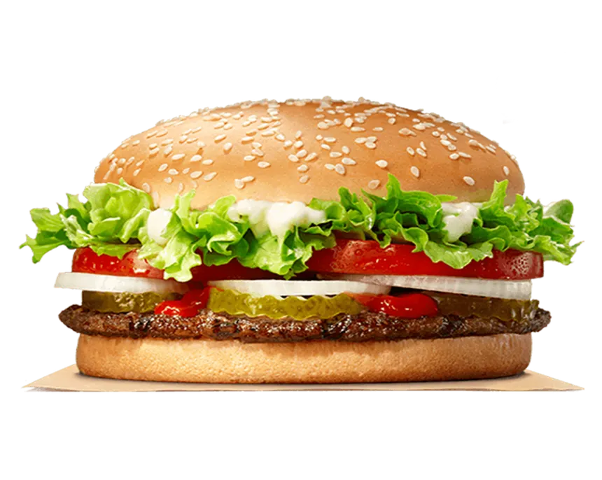
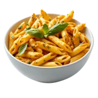
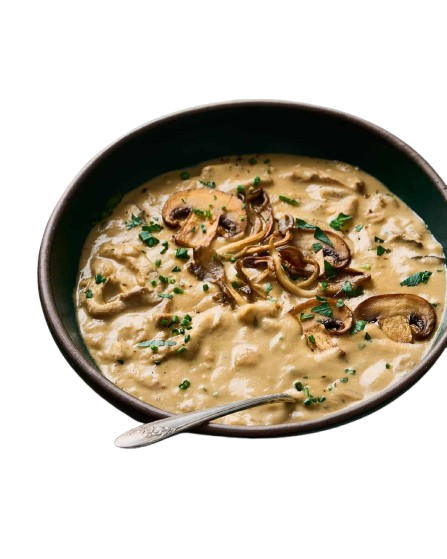

Vegetable Spring Rolls
Crispy, golden rolls filled with a colorful mix of fresh vegetables and aromatic seasonings, served with a tangy dipping sauce.
Crispy, golden rolls filled with a colorful mix of fresh vegetables and aromatic seasonings, served with a tangy dipping sauce.

A hearty, plant-based patty made from fresh vegetables, grains, and spices, grilled to perfection and served on a toasted bun with your favorite toppings.

Tender penne pasta tossed in a rich, flavorful sauce with herbs, vegetables, and your choice of protein for a satisfying, classic dish.

A warm, creamy blend of earthy mushrooms simmered with savory herbs and spices, perfect for a comforting, hearty meal.
